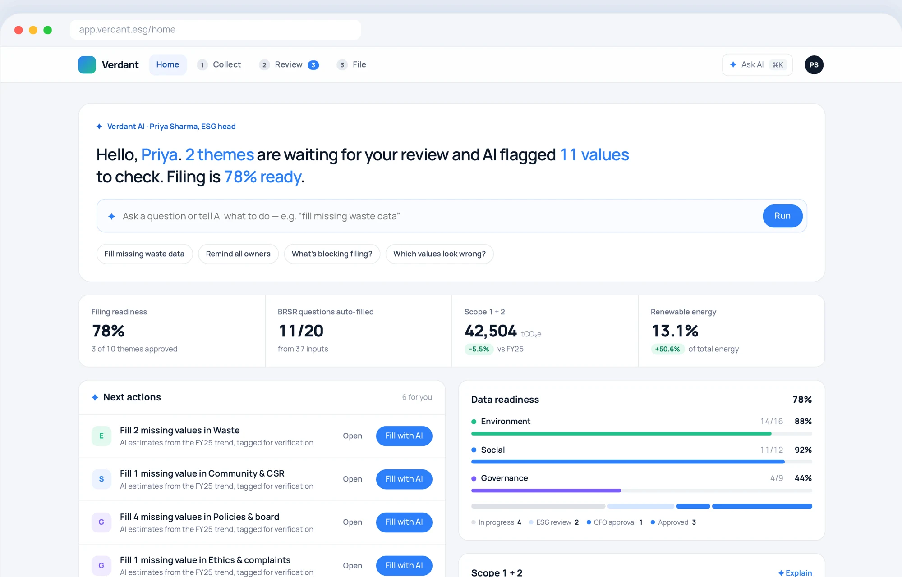
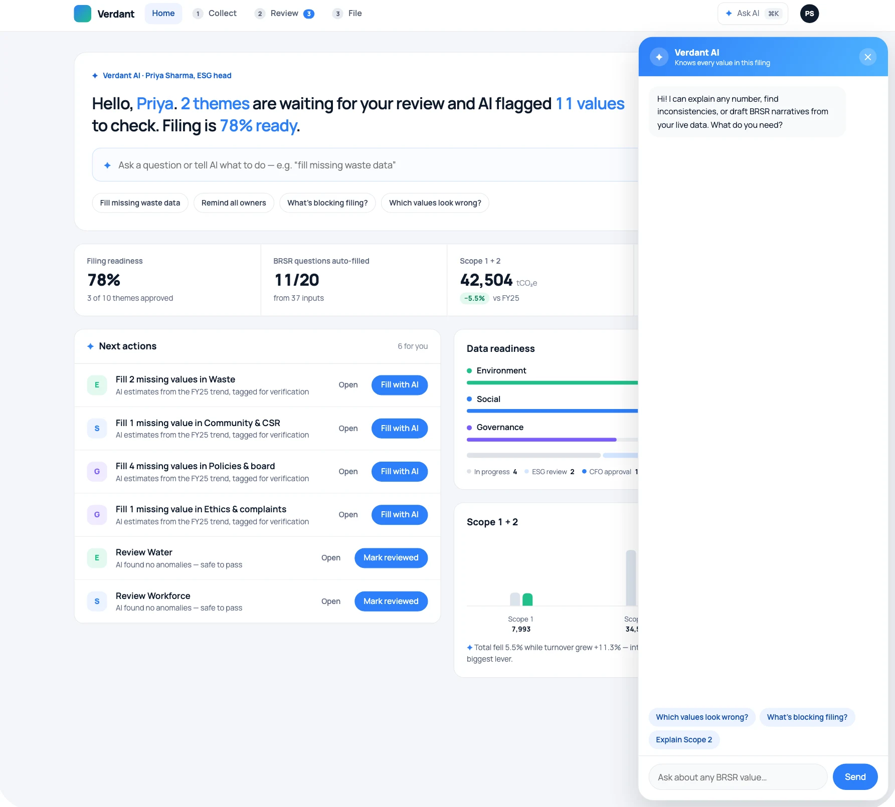
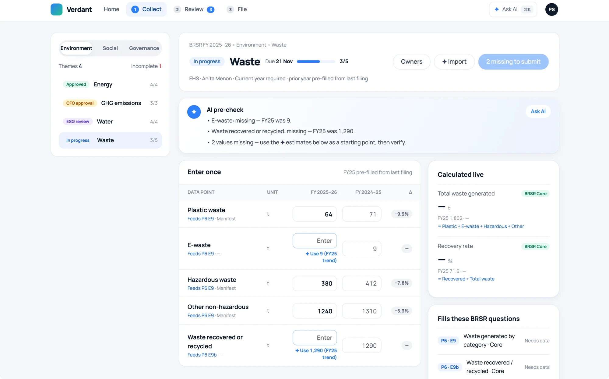
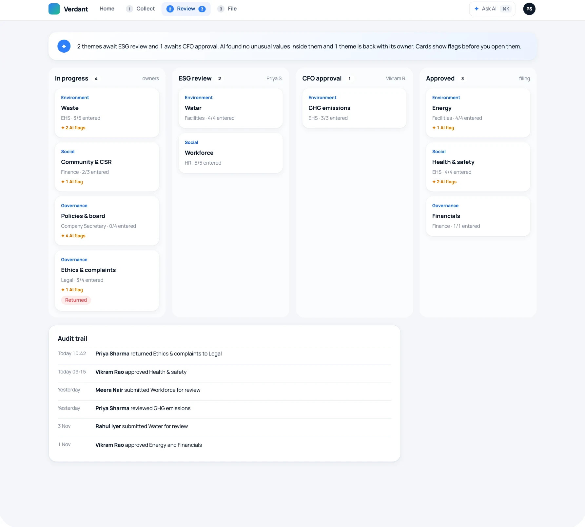
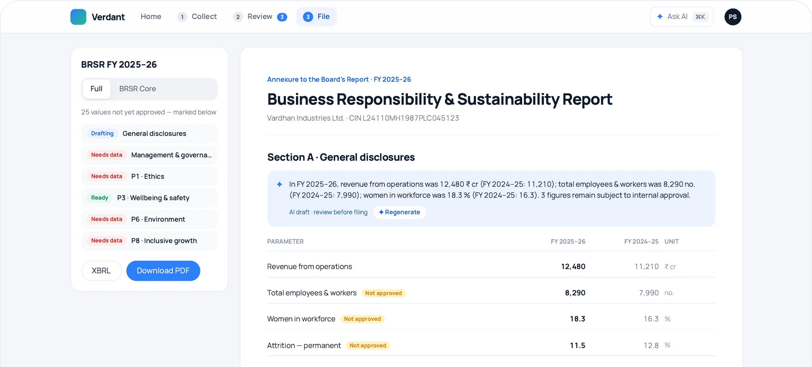

Redesigning how Indian listed companies prepare their annual sustainability report — from a spreadsheet-and-email scramble to a guided, four-step workflow.

BRSR is structured for regulators, not for the teams who own the data. Values are re-entered across disclosures, calculated by hand, and approved over email with no clear audit trail.
Mapped every BRSR question to its raw data point, regrouped them into 10 department-owned themes, and added an AI layer that flags, estimates and drafts — always with a human approving.
A four-step product — Home, Collect, Review, File — where each value is entered once, every disclosure calculates itself, and approvers start from what needs their attention.
India's market regulator, SEBI, requires listed companies to publish a Business Responsibility & Sustainability Report (BRSR) every year alongside the annual report. It covers environmental, social and governance performance across Sections A–C and nine principles.
Questions follow Sections A, B and Principles 1–9 — not the teams that actually own the data.
Electricity, headcount and turnover reappear across many disclosures and get re-entered each time.
Emissions, intensities and safety rates are calculated by hand — the main source of errors.
Approvals happen over email; nobody knows which numbers deserve a second look.
…let each department enter its numbers once, have every disclosure calculate itself, and give approvers confidence before filing?
A single filing passes through several hands. Each role needed its own entry point — not one dashboard for everyone.
EHS, HR, Finance, Legal
Needs to
Enter only their team's numbers, quickly, without learning the BRSR structure.
Owns the filing end-to-end
Needs to
See what's blocking the filing, chase owners, and review values with context.
Final internal approver
Needs to
Approve with confidence, starting from flagged values rather than the whole sheet.
External verification
Needs to
Trace every reported number back to its source, formula and approver.
ResponseRegroup into 10 themes, each owned by one team.
Response“Enter once” — each input shows which questions it feeds and is reused.
ResponseLive, visible formulas with last year's value alongside.
ResponseAI flags large year-on-year swings and gaps first.
ResponseA role-aware home that shows only your next actions.
| Category | BRSR-native | Enter once | Auto-calculate | AI review |
|---|---|---|---|---|
| Global enterprise suitesSalesforce, SAP, Workiva, Samsung SDS | Partial | Partial | Yes | Partial |
| India-focused ESG toolsBRSR reporting software | Yes | No | Partial | No |
| Spreadsheets + consultantsStill the default | Manual | No | No | No |
| Verdant | Yes | Yes | Yes | Yes |
Category-level assessment based on public product material; to be validated through product demos.
Each round answered a different question — first is the model right?, then does it feel familiar?, and finally what can we remove?
Themes, enter-once inputs, live formulas, 4-role approval.
Proved the information model before any visual design.
Moved from a wireframe aesthetic to familiar components.
Lowered the learning curve for non-specialist data owners.
Readiness ring, approval pipeline, charts, data checks.
Gave the ESG head a live view of progress.
Briefing, flags, estimates, drafted narratives, assistant.
Shifted effort from finding problems to fixing them.
Four steps, a command bar, one-click actions.
Cut navigation down to the path every filing takes.
A role-aware briefing replaces the generic dashboard. A command bar answers questions or takes action (“fill missing waste data”), and next actions can be finished without leaving the page.

Opens with what's waiting for you: themes to review, values flagged, and filing readiness.
One input for questions and commands, with suggested prompts for common tasks.
Missing values can be filled from last year's trend — tagged for verification.
Each department sees only its own theme. An AI pre-check lists gaps and unusual swings; missing values can be estimated from last year's trend and stay tagged until verified.

Users see exactly which BRSR questions a value fills.
Scope 1, 2 and intensity figures recalculate as you type.
AI flags swings over 25%; confirming takes one click.
Themes move from owner → ESG head → CFO, with AI flags visible on every card and a full audit trail. The assistant (⌘K) knows every value in the filing and answers in context.

Approved values flow straight into Sections A–C. AI drafts each section's narrative from live data, clearly marked “review before filing”, with PDF and XBRL export.

A filed report carries legal weight, so every AI feature was designed around trust and accountability.
A single ✦ mark and amber colour identify everything AI produced, so it's never mistaken for verified data.
Trend-based estimates remain marked until a data owner verifies them.
Narratives are labelled “review before filing” and can be regenerated as data changes.
Every figure can be explained — its formula, its inputs and who approved it.
#2D7FF9#22C08A#7C5CFC#D97706#E5484D#0F1A2A#F4F6F9#E7EBF0Manrope · tabular figures
Grid electricity purchased · Feeds P6 E1
4px grid · radius 8 / 16 / 20 / pill · flat hairline surfaces · shadows only on floating layers
department-owned themes replace a regulator-ordered questionnaire
every value entered once and reused wherever it's needed
E, S and G metrics calculated live with visible formulas
steps from first data request to a filed report
Days from the first data request to an approved, exported report.
Share of BRSR questions answered automatically from entered inputs.
Values returned to owners, and how many of those were caught by AI flags first.
Success metrics proposed for validation with real filers.